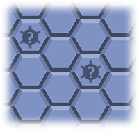
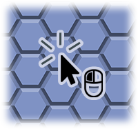
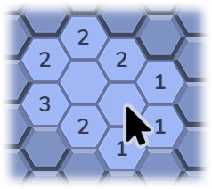
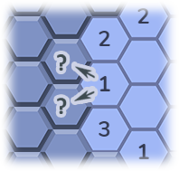
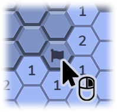
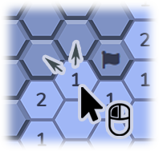
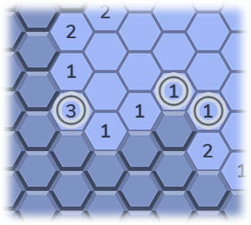
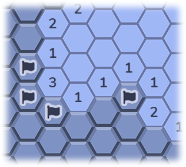
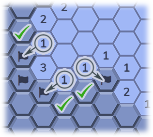
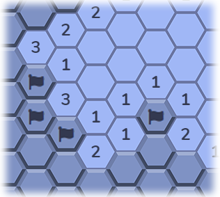

How to Play
The object of Hex Sweeper is to open all off the empty cells without hitting any mines. Hitting even one mine ends the game!

Most of the cells are empty, but some of them contain mines. Clicking on a mine will detonate it and every other mine on the board, and that's game over!
Left click on a cell to open it. If the cell is empty, the surrounding cells will automatically open. Don't worry, your first click will never be on a mine!

The number on an empty cell tells you how many mines are adjecent to that cell. Use that information to figure out where the mines are (more on that soon).
Right click on a closed cell to put a flag on it. You can't open a flagged cell, and this will keep track of how many mines you have left to find.
Be careful! The mine counter will go down even if there is not actually a mine in the cell you flagged!
Left click on an open cell to automatically open adjecent cells (unless they have a flag on them). This helps speed things up when you know where a mine is, but be careful! If you are wrong this can open a cell with a mine and it will be game over!
Gameplay Example
Take a look at this situation. Each of the circled cells are adjacent to exactly as many closed cells as they are indicating they have adjacent mines.
The 3 is touching three cells, and the 1s are touching one.
So! We can go ahead and flag those cells, knowing they MUST have mines inside them.
Now, take a look at these circled cells. The adjacent cells with mines they are referring to MUST be the cells we just flagged, because we know for sure there are mines there. Thus, we know the cells with check marks are safe to open.
See? Now we have more open cells with more information. In fact, we now have two cells we know we can open safely, and then a cell we know we can flag. Do you see them?